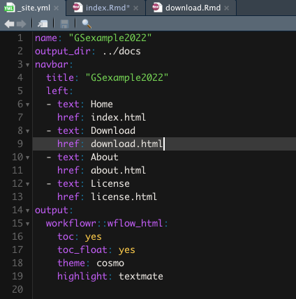
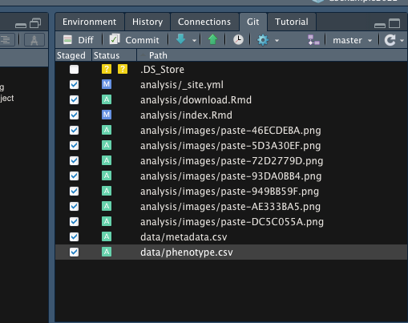
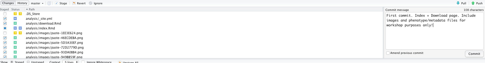
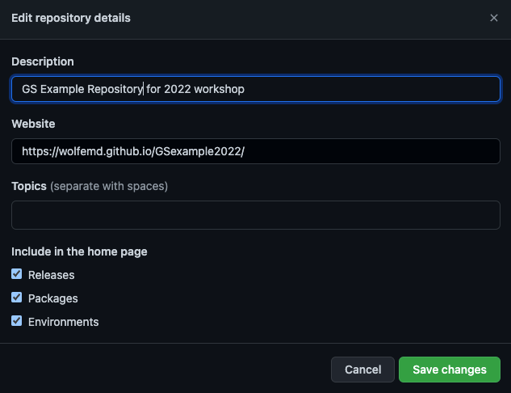
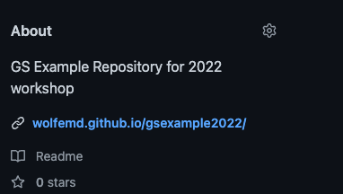
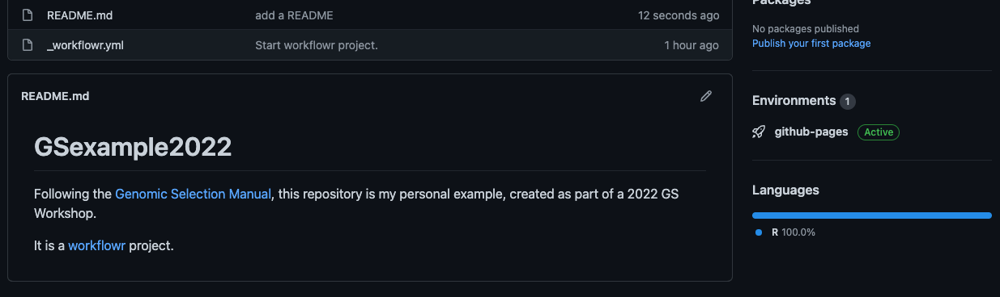
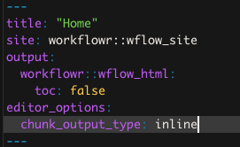

Last updated: 2022-05-09
Checks: 7 0
Knit directory: GSexample2022/
This reproducible R Markdown analysis was created with workflowr (version 1.7.0). The Checks tab describes the reproducibility checks that were applied when the results were created. The Past versions tab lists the development history.
Great! Since the R Markdown file has been committed to the Git repository, you know the exact version of the code that produced these results.
Great job! The global environment was empty. Objects defined in the global environment can affect the analysis in your R Markdown file in unknown ways. For reproduciblity it’s best to always run the code in an empty environment.
The command set.seed(20220320) was run prior to running the code in the R Markdown file. Setting a seed ensures that any results that rely on randomness, e.g. subsampling or permutations, are reproducible.
Great job! Recording the operating system, R version, and package versions is critical for reproducibility.
Nice! There were no cached chunks for this analysis, so you can be confident that you successfully produced the results during this run.
Great job! Using relative paths to the files within your workflowr project makes it easier to run your code on other machines.
Great! You are using Git for version control. Tracking code development and connecting the code version to the results is critical for reproducibility.
The results in this page were generated with repository version bb2d981. See the Past versions tab to see a history of the changes made to the R Markdown and HTML files.
Note that you need to be careful to ensure that all relevant files for the analysis have been committed to Git prior to generating the results (you can use wflow_publish or wflow_git_commit). workflowr only checks the R Markdown file, but you know if there are other scripts or data files that it depends on. Below is the status of the Git repository when the results were generated:
Ignored files:
Ignored: .Rhistory
Ignored: .Rproj.user/
Untracked files:
Untracked: .DS_Store
Untracked: Icon
Untracked: analysis/.DS_Store
Untracked: analysis/BreedBaseGenotypes_subset.log
Untracked: analysis/Icon
Untracked: analysis/images/Icon
Untracked: analysis/images/paste-2F34C15B.png
Untracked: analysis/images/paste-AD7AEEAC.png
Untracked: analysis/images/paste-CB5D91AC.png
Untracked: analysis/troubleshooting.Rmd
Untracked: code/Icon
Untracked: data/.DS_Store
Untracked: data/BreedBaseGenotypesDownload.positions
Untracked: data/BreedBaseGenotypesDownload.vcf
Untracked: data/BreedBaseGenotypes_subset.bed
Untracked: data/BreedBaseGenotypes_subset.bim
Untracked: data/BreedBaseGenotypes_subset.fam
Untracked: data/BreedBaseGenotypes_subset.hap.gz
Untracked: data/BreedBaseGenotypes_subset.log
Untracked: data/BreedBaseGenotypes_subset.nosex
Untracked: data/BreedBaseGenotypes_subset.positions
Untracked: data/BreedBaseGenotypes_subset.samples
Untracked: data/Icon
Untracked: data/metadata_cynthia.csv
Untracked: data/phenotype_cynthia.csv
Untracked: data/subset_unique_names_for_vcf.txt
Untracked: data/unique_names_for_vcf.txt
Untracked: data/vcf_colnames.txt
Untracked: out.log
Untracked: output/.DS_Store
Untracked: output/BreedBaseGenotypes_subset.genome
Untracked: output/BreedBaseGenotypes_subset.log
Untracked: output/BreedBaseGenotypes_subset.nosex
Untracked: output/Icon
Untracked: output/genomicPredictions.rds
Untracked: output/models_compared.Rdata
Untracked: output/parentWiseCV.rds
Untracked: output/standardCV.rds
Untracked: output/verified_ped.rds
Note that any generated files, e.g. HTML, png, CSS, etc., are not included in this status report because it is ok for generated content to have uncommitted changes.
These are the previous versions of the repository in which changes were made to the R Markdown (analysis/index.Rmd) and HTML (docs/index.html) files. If you’ve configured a remote Git repository (see ?wflow_git_remote), click on the hyperlinks in the table below to view the files as they were in that past version.
| File | Version | Author | Date | Message |
|---|---|---|---|---|
| Rmd | bb2d981 | wolfemd | 2022-05-09 | Add the final two sections - parent-wise cross-validation plus predicting crosses |
| html | 260d2fe | wolfemd | 2022-05-05 | Build site. |
| Rmd | 975daa7 | wolfemd | 2022-05-05 | Publish demo for k-fold cross-val and genomic prediction of GEBV steps |
| html | 176b527 | wolfemd | 2022-04-26 | Build site. |
| Rmd | acd7ed5 | wolfemd | 2022-04-26 | Add ‘Intro to GP’ section. Update ‘Index’ page. Minor tweak to ‘Get BLUPs’ section. |
| html | 63d6587 | wolfemd | 2022-04-20 | Build site. |
| Rmd | 9c0e19e | wolfemd | 2022-04-20 | Add the ‘preliminary trial analysis’ or ‘get blups’ steps. |
| html | 065ed11 | wolfemd | 2022-04-01 | Build site. |
| Rmd | e3d8e65 | wolfemd | 2022-04-01 | update everything |
| html | adb7ede | wolfemd | 2022-04-01 | Build site. |
| Rmd | b62cd6d | wolfemd | 2022-04-01 | Add the ‘prep genos’ steps |
| html | 4d5fb81 | wolfemd | 2022-03-25 | Build site. |
| Rmd | 11eeb79 | wolfemd | 2022-03-25 | Publish cleaned phenotypes. |
| Rmd | 5d83192 | wolfemd | 2022-03-24 | Build site. |
| html | 5d83192 | wolfemd | 2022-03-24 | Build site. |
| Rmd | 4665bfe | wolfemd | 2022-03-21 | fix link to ‘downloads.html’ |
| html | 4665bfe | wolfemd | 2022-03-21 | fix link to ‘downloads.html’ |
| html | a2e7492 | wolfemd | 2022-03-20 | Build site. |
| Rmd | e4f9fd9 | wolfemd | 2022-03-20 | Update index.Rmd with additional screenshipts on publishing to github |
| html | 9a87a77 | wolfemd | 2022-03-20 | Build site. |
| html | b54d21a | wolfemd | 2022-03-20 | Build site. |
| Rmd | 2a55fb9 | wolfemd | 2022-03-20 | First publish |
| Rmd | 3366366 | wolfemd | 2022-03-20 | First commit. Index + Download page. Include images and phenotype/metadata files for workshop purposes only! |
| Rmd | d05e5dd | wolfemd | 2022-03-20 | Start workflowr project. |
Welcome to my example GS repository. I followed the instructions here to create this project.
I’m going to follow along the Genomic Selection Manual throughout this project.
Create the “download.Rmd”
wflow_open("analysis/download.Rmd")Link to it: Data Download Stage
Add it to the top navigation bar, via the _site.yml file:

sommer to fit G-BLUP and RR-BLUP models, a demo of their equivalency and quickly showing how to run cross-validations with the runCrossVal() function of library(genomicMateSelectR).runGenomicPredictions() and get GEBV for our population, computing the selection index performance using those GEBVs for our ultimate selections of parents.TROUBLESHOOTING RMD: Troubleshooting each step
Example, first commit:

VERY IMPORTANT NOTE: here I’m adding the data/metadata.csv and data/phenotype.csv. These are small files and I want them available to workshop users. DO NOT make a habit of this. GitHub max size is 25 Mb. ESPECIALLY DO NOT add genomic data files to your Git version control.

Follow the manual’s instructions at: https://wolfemd.github.io/GenomicSelectionManual/create_project.html#publishing-on-github-pages
In addition, edit repository details, adding the GitHub pages web address and a short description, like so:


Consider modifying the README.md file in the main project folder, as it will display to anyone viewing the repository directly on GitHub.

workflowR projectChange chunk output setting to “inline output” instead of “console”

sessionInfo()R version 4.1.1 (2021-08-10)
Platform: x86_64-apple-darwin17.0 (64-bit)
Running under: macOS Big Sur 10.16
Matrix products: default
BLAS: /Library/Frameworks/R.framework/Versions/4.1/Resources/lib/libRblas.0.dylib
LAPACK: /Library/Frameworks/R.framework/Versions/4.1/Resources/lib/libRlapack.dylib
locale:
[1] en_US.UTF-8/en_US.UTF-8/en_US.UTF-8/C/en_US.UTF-8/en_US.UTF-8
attached base packages:
[1] stats graphics grDevices utils datasets methods base
other attached packages:
[1] workflowr_1.7.0
loaded via a namespace (and not attached):
[1] Rcpp_1.0.7 compiler_4.1.1 pillar_1.6.4 bslib_0.3.1
[5] later_1.3.0 git2r_0.29.0 jquerylib_0.1.4 tools_4.1.1
[9] getPass_0.2-2 digest_0.6.29 jsonlite_1.7.2 evaluate_0.14
[13] tibble_3.1.6 lifecycle_1.0.1 pkgconfig_2.0.3 rlang_0.4.12
[17] rstudioapi_0.13 yaml_2.2.1 xfun_0.29 fastmap_1.1.0
[21] httr_1.4.2 stringr_1.4.0 knitr_1.37 sass_0.4.0
[25] fs_1.5.2 vctrs_0.3.8 rprojroot_2.0.2 glue_1.6.0
[29] R6_2.5.1 processx_3.5.2 fansi_0.5.0 rmarkdown_2.11
[33] callr_3.7.0 magrittr_2.0.1 whisker_0.4 ps_1.6.0
[37] promises_1.2.0.1 htmltools_0.5.2 ellipsis_0.3.2 httpuv_1.6.5
[41] utf8_1.2.2 stringi_1.7.6 crayon_1.4.2